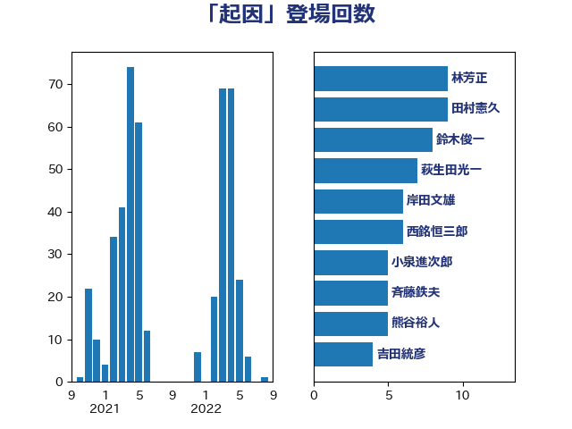

単語「起因」

| 林芳正 | 自由民主党 | 9 回 |
| 田村憲久 | 自由民主党 | 9 回 |
| 鈴木俊一 | 自由民主党 | 8 回 |
| 萩生田光一 | 自由民主党 | 7 回 |
| 岸田文雄 | 自由民主党 | 6 回 |
| 西銘恒三郎 | 自由民主党 | 6 回 |
| 小泉進次郎 | 自由民主党 | 5 回 |
| 斉藤鉄夫 | 公明党 | 5 回 |
| 熊谷裕人 | 立憲民主党 | 5 回 |
| 吉田統彦 | 立憲民主党 | 4 回 |
| 室井邦彦 | 日本維新の会 | 4 回 |
| 宮本徹 | 日本共産党 | 4 回 |
| 平井卓也 | 自由民主党 | 4 回 |
| 梶山弘志 | 自由民主党 | 4 回 |
| 浅野哲 | 国民民主党 | 4 回 |
| 田村まみ | 国民民主党 | 4 回 |
| 佐々木紀 | 自由民主党 | 3 回 |
| 安江伸夫 | 公明党 | 3 回 |
| 小林鷹之 | 自由民主党 | 3 回 |
| 小沼巧 | 立憲民主党 | 3 回 |
| 平沼正二郎 | 自由民主党 | 3 回 |
| 後藤茂之 | 自由民主党 | 3 回 |
| 打越さく良 | 立憲民主党 | 3 回 |
| 新垣邦男 | 立憲民主党 | 3 回 |
| 石原正敬 | 自由民主党 | 3 回 |
| 赤羽一嘉 | 公明党 | 3 回 |
| 足立敏之 | 自由民主党 | 3 回 |
| 中山展宏 | 自由民主党 | 2 回 |
| 倉林明子 | 日本共産党 | 2 回 |
| 吉川ゆうみ | 自由民主党 | 2 回 |
| 吉田宣弘 | 公明党 | 2 回 |
| 城井崇 | 立憲民主党 | 2 回 |
| 守島正 | 日本維新の会 | 2 回 |
| 小倉將信 | 自由民主党 | 2 回 |
| 小宮山泰子 | 立憲民主党 | 2 回 |
| 山口壯 | 自由民主党 | 2 回 |
| 川合孝典 | 国民民主党 | 2 回 |
| 川田龍平 | 立憲民主党 | 2 回 |
| 平木大作 | 公明党 | 2 回 |
| 木村英子 | れいわ新選組 | 2 回 |
| 末松信介 | 自由民主党 | 2 回 |
| 本村伸子 | 日本共産党 | 2 回 |
| 柳ヶ瀬裕文 | 日本維新の会 | 2 回 |
| 櫻井周 | 立憲民主党 | 2 回 |
| 源馬謙太郎 | 立憲民主党 | 2 回 |
| 牧山ひろえ | 立憲民主党 | 2 回 |
| 玉木雄一郎 | 国民民主党 | 2 回 |
| 田所嘉徳 | 自由民主党 | 2 回 |
| 石井拓 | 自由民主党 | 2 回 |
| 芳賀道也 | 国民民主党 | 2 回 |
| 豊田俊郎 | 自由民主党 | 2 回 |
| 野上浩太郎 | 自由民主党 | 2 回 |
| 青木愛 | 立憲民主党 | 2 回 |
| 音喜多駿 | 日本維新の会 | 2 回 |
| 三谷英弘 | 自由民主党 | 1 回 |
| 上川陽子 | 自由民主党 | 1 回 |
| 中川正春 | 立憲民主党 | 1 回 |
| 中川貴元 | 自由民主党 | 1 回 |
| 中谷一馬 | 立憲民主党 | 1 回 |
| 井上信治 | 自由民主党 | 1 回 |
| 井上哲士 | 日本共産党 | 1 回 |
| 井坂信彦 | 立憲民主党 | 1 回 |
| 今枝宗一郎 | 自由民主党 | 1 回 |
| 伊藤俊輔 | 立憲民主党 | 1 回 |
| 伊藤孝恵 | 国民民主党 | 1 回 |
| 伴野豊 | 立憲民主党 | 1 回 |
| 勝部賢志 | 立憲民主党 | 1 回 |
| 北神圭朗 | 無所属 | 1 回 |
| 古屋範子 | 公明党 | 1 回 |
| 吉川元 | 立憲民主党 | 1 回 |
| 吉川沙織 | 立憲民主党 | 1 回 |
| 吉川赳 | 無所属 | 1 回 |
| 吉田久美子 | 公明党 | 1 回 |
| 和田義明 | 自由民主党 | 1 回 |
| 国光あやの | 自由民主党 | 1 回 |
| 堀内詔子 | 自由民主党 | 1 回 |
| 塩川鉄也 | 日本共産党 | 1 回 |
| 塩村あやか | 立憲民主党 | 1 回 |
| 塩田博昭 | 公明党 | 1 回 |
| 大塚耕平 | 国民民主党 | 1 回 |
| 大家敏志 | 自由民主党 | 1 回 |
| 大岡敏孝 | 自由民主党 | 1 回 |
| 大野泰正 | 自由民主党 | 1 回 |
| 太栄志 | 立憲民主党 | 1 回 |
| 安達澄 | 無所属 | 1 回 |
| 宗清皇一 | 自由民主党 | 1 回 |
| 小林茂樹 | 自由民主党 | 1 回 |
| 小渕優子 | 自由民主党 | 1 回 |
| 小西洋之 | 立憲民主党 | 1 回 |
| 山崎正恭 | 公明党 | 1 回 |
| 山本博司 | 公明党 | 1 回 |
| 岸信夫 | 自由民主党 | 1 回 |
| 市村浩一郎 | 日本維新の会 | 1 回 |
| 徳永エリ | 立憲民主党 | 1 回 |
| 徳永久志 | 立憲民主党 | 1 回 |
| 掘井健智 | 日本維新の会 | 1 回 |
| 日下正喜 | 公明党 | 1 回 |
| 杉久武 | 公明党 | 1 回 |
| 村井英樹 | 自由民主党 | 1 回 |
| 柳本顕 | 自由民主党 | 1 回 |
| 横山信一 | 公明党 | 1 回 |
| 水岡俊一 | 立憲民主党 | 1 回 |
| 江島潔 | 自由民主党 | 1 回 |
| 江田憲司 | 立憲民主党 | 1 回 |
| 池下卓 | 日本維新の会 | 1 回 |
| 浅田均 | 日本維新の会 | 1 回 |
| 渡辺周 | 立憲民主党 | 1 回 |
| 片山さつき | 自由民主党 | 1 回 |
| 田中健 | 国民民主党 | 1 回 |
| 田名部匡代 | 立憲民主党 | 1 回 |
| 田嶋要 | 立憲民主党 | 1 回 |
| 田村貴昭 | 日本共産党 | 1 回 |
| 畦元将吾 | 自由民主党 | 1 回 |
| 矢倉克夫 | 公明党 | 1 回 |
| 石垣のりこ | 立憲民主党 | 1 回 |
| 礒崎哲史 | 国民民主党 | 1 回 |
| 福島みずほ | 社会民主党 | 1 回 |
| 福重隆浩 | 公明党 | 1 回 |
| 稲津久 | 公明党 | 1 回 |
| 空本誠喜 | 日本維新の会 | 1 回 |
| 笠井亮 | 日本共産党 | 1 回 |
| 笹川博義 | 自由民主党 | 1 回 |
| 紙智子 | 日本共産党 | 1 回 |
| 細田健一 | 自由民主党 | 1 回 |
| 緒方林太郎 | 無所属 | 1 回 |
| 美延映夫 | 日本維新の会 | 1 回 |
| 羽田次郎 | 立憲民主党 | 1 回 |
| 自見はなこ | 自由民主党 | 1 回 |
| 舩後靖彦 | れいわ新選組 | 1 回 |
| 若宮健嗣 | 自由民主党 | 1 回 |
| 若松謙維 | 公明党 | 1 回 |
| 藤原崇 | 自由民主党 | 1 回 |
| 藤川政人 | 自由民主党 | 1 回 |
| 西岡秀子 | 国民民主党 | 1 回 |
| 西村康稔 | 自由民主党 | 1 回 |
| 西村智奈美 | 立憲民主党 | 1 回 |
| 赤池誠章 | 自由民主党 | 1 回 |
| 足立康史 | 日本維新の会 | 1 回 |
| 逢坂誠二 | 立憲民主党 | 1 回 |
| 酒井庸行 | 自由民主党 | 1 回 |
| 重徳和彦 | 立憲民主党 | 1 回 |
| 野間健 | 立憲民主党 | 1 回 |
| 鈴木淳司 | 自由民主党 | 1 回 |
| 鈴木貴子 | 自由民主党 | 1 回 |
| 長友慎治 | 国民民主党 | 1 回 |
| 阿部知子 | 立憲民主党 | 1 回 |
| 階猛 | 立憲民主党 | 1 回 |
| 高良鉄美 | 無所属 | 1 回 |